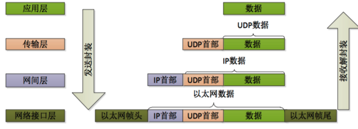

网络通信
TCP/IP五层模型
TCP/IP协议五层模型中的应用层对应网络七层模型中的第五层、第六层和第七层的功能
- 应用层:对应应用程序的通信服务 如HTTP,FTP,NFS,SMTP
- 传输层:是否选择差错恢复协议还是无差错恢复协议，在同一主机上对不同应用的数据流的输入进行复用，还包括对收到的顺序不对的数据包的重新排序功能。 如TCP UDP
- 网络层:主要为数据包寻找路由(路由寻址),为了适应最大传输单元长度(MTU)小于包长度的传输介质，网络层还定义了如何分包 ,路由器
- 数据链路层:传输有地址的帧 ，以太网交换机等 数据成帧后通过差错控制提供数据帧在信道上无差错的传输
- 物理层:数据传输的物理媒介
应用层用于识别数据内容,通过遵循应用层协议(HTTP、FTP或者我们自己定义的协议等)可以识别数据,使数据有意义
TCP/IP协议还提供一项名为UDP（用户数据报协议)
TCP：面向连接、传输可靠、用于传输大量数据(流模式)、速度慢，建立连接需要开销较多(时间，系统资源)。
UDP：面向非连接(是指在正式通信前不必与对方先建立连接，不管对方状态就直接发送)、传输不可靠、用于传输少量数据(数据包模式)、速度快。
//UDP传输层传输的示意图

UDP端口对于基于UDP的通信作为单一消息队列和网络端点来操作，而所有TCP通信的终点都是唯一的连接。每个TCP连接由两个端点唯一识别。由于所有TCP连接由两对 IP 地址和TCP端口唯一识别（每个所连主机都有一个地址/端口对），因此每个TCP服务器端口都能提供对多个连接的共享访问
TCP的长连接和短连接
在利用TCP协议开始通讯前,需要客户端和服务端进行三次握手来建立连接,而在结束通信后需要由四次握手来释放连接
TCP短连接&&长连接
短连接即建立连接后,client向server发送消息,server收到消息回应client 然后完成了一次读写通信后,这时候双方都可以进行close操作,一般由客户端进行断开连接的操作,因此短连接只进行一次传递读写的操作
长连接是在建立连接,进行读写之后并不会主动关闭连接,后续仍然使用这个连接来进行读写
维护长连接
我们在应用中创建一个长连接，这个长连接并没有确切时间限制,而是说这条连接需要时间较长
通常我们在应用中对网络通信的实时性要求较高,需要及时知道已经断开的连接进行及时处理,因此我们需要手工来进行不断探测
1.应用层使用心跳包
一般在一个心跳间隔,客户端发送一个特定ping消息到服务器,服务器返回消息完成一次心跳交互,等待下一轮.如果客户端没有收到心跳反馈就会关闭掉TCP连接,心跳周期一般设置为几分钟,比如微信为300S
心跳机制可以由客户端和服务器两端都可以发送心跳包，两端也都可以监测, 一般为客户端发送心跳包服务器监测,如果在一个心跳周期没有收到心跳反馈可以断开连接(或者没有收到反馈后再发送几次ping包确定没有收到反馈后即断开连接) 而服务器一般在心跳间隔的1.5周期没有收到客户端的心跳包可以选择断开连接，当然具体情况视应用具体需求而定
2.TCP/IP协议层面的心跳机制
TCP保活功能:
保活功能主要为服务器应用提供，用来检测客户端主机是否已经崩溃,如果客户端主机已经消失,那么服务器上这个连接就成为了半开放连接,而保活功能就是用来检测这种半开放连接的:
如果一个给定的连接在两小时内没有任何的动作，则服务器就向客户发一个探测报文段，客户主机处于以下4个状态之一：
- 客户主机依然正常运行，并从服务器可达。客户的TCP响应正常，而服务器也知道对方是正常的，服务器在两小时后将保活定时器复位。
- 客户主机已经崩溃，并且关闭或者正在重新启动。在任何一种情况下，客户的TCP都没有响应。服务端将不能收到对探测的响应，并在75秒后超时。服务器总共发送10个这样的探测 ，每个间隔75秒。如果服务器没有收到一个响应，它就认为客户主机已经关闭并终止连接。
- 客户主机崩溃并已经重新启动。服务器将收到一个对其保活探测的响应，这个响应是一个复位，使得服务器终止这个连接。
- 客户机正常运行，但是服务器不可达，这种情况与2类似，TCP能发现的就是没有收到探查的响应。
TCP的心跳机制即为利用上面说的保活功能使两小时后发现TCP连接是否存在,如果想要使时间减少就需要修改内核方面参数,这种方式是很不合适的
socket编程
socket也称为套接字,用于描述IP地址和端口,实现不同主机间通信,IP地址和端口确定一个socket
端口:用于区分不同应用服务,比如
HTTP或者FTP等,然后可以根据应用协议来解析数据
Socket是应用层与TCP/IP协议族通信的中间软件抽象层，对TCP/IP进行了封装，这就是Socket编程接口,程序员通过其进行网络开发.
HTTP是轿车，提供了封装或者显示数据的具体形式;Socket是发动机，提供了网络通信的能力

在Internet上的主机一般运行了多个服务软件，同时提供几种服务。每种服务都打开一个Socket，并绑定到一个端口上，不同的端口对应于不同的服务。

常用应用层协议
应用层协议 :规定了客户端和服务器之间的数据传输格式
1.HTTP
长连接&&短连接
HTTP为应用层协议,在传输层使用TCP协议，在网络使用IP协议
HTTP连接最显著的特点是客户端发送的每次请求都需要服务器回送响应，在请求结束后，会主动释放连接。
HTTP的长连接和短连接本质就是TCP的长连接和短连接,http通过tcp三次握手建立连接
在HTTP/1.0中默认使用短连接，每进行一次HTTP操作就建立一次连接,结束就中断
从HTTP/1.1开始，默认使用长连接来保持连接特性,使用长连接的HTTP协议，会在响应头有加入这行代码：Connection:keep-alive,可以在一次连接中处理多个请求，可以重叠进行
Keep-Alive并不会永久保持连接，它有一个保持时间，可以在不同的服务器软件（如Apache）中设定这个时间。实现长连接要客户端和服务端都支持长连接。
注意:这个alive 和 tcp的alive是不同的
轮询
分为短轮询和长轮询
短轮询:向服务器发送数据，服务器返回结果,不断的操作就是轮询,缺点是浪费了大量资源
优点：后端程序编写比较容易。
缺点：请求中有大半是无用，浪费带宽和服务器资源。
实例：适于小型应用。
长轮询：解决了短轮询的问题,长轮询的操作是:前段发送请求给后端，后台收到请求后并不及时返回,加入后台数据没有更新,就将请求挂起来直到有消息返回才返回响应信息并关闭连接,这样就不会频繁请求堵塞服务器
优点：在无消息的情况下不会频繁的请求，耗费资源小。
缺点：服务器hold连接会消耗资源，返回数据顺序无保证，难于管理维护。
实例：WebQQ、Hi网页版

2.WebSocket
在上面介绍的HTTP的轮询方式是非常浪费资源的,因为HTTP的header非常长,我们频繁发送一个很小的数据却占用了大量带宽,因此我们可以用webSocket代替
WebSocket是应用层协议，是html5一种新的协议。它实现了浏览器与服务器全双工通信
WebSocket建立连接过程:
1. 浏览器、服务器建立TCP连接，三次握手。这是通信的基础，传输控制层，若失败后续都不执行
2. TCP连接成功后，浏览器通过HTTP协议向服务器传送WebSocket支持的版本号等信息。（开始前的HTTP握手）
3. 服务器收到客户端的握手请求后，同样采用HTTP协议回馈数据。
4. 当收到了连接成功的消息后，通过TCP通道进行传输通信
WebSocket在建立握手时，数据是通过HTTP传输的。但是建立之后，在真正传输时候是不需要HTTP协议的
WebSocket是一种双向通信协议，在建立连接后，WebSocket服务器和Browser/Client Agent都能主动的向对方发送或接收数据，就像Socket一样;
存在问题:
webSockets虽然是实现了长连接，但是如果客户端与服务端长时间没有发送数据，那么网络链路就会认为这个连接已经失效，会自作主张的将其断开，因此需要发送心跳包
iOS端使用webSocket：
接入WebSocket记录
iOS中网络编程
iOS网络层次
iOS网络编程层次结构分为三层:
Cocoa层：NSURL，Bonjour，Game Kit，WebKit
Core Foundation层：基于C的CFNetwork 和 CFNetServices
OS层:基于C的 BSD socket
Bonjour封装了CFNetwork,Bonjour中的NSNetService也有对应底层实现CFNetService，NSInputStream有对应的底层实现CFInputStream
Bonjour是一种能够自动查询接入网络中的设备或应用程序的协议，抽象ip和port为service，一个应用程序publish一个网络服务service然后网络中的其他程序就能自动发现这个service，从而可以向这个service查询其ip和port，然后通过获得的ip和port建立 socket链接进行通信。通常我们是通过NSNetService和NSNetServiceBrowser来使用 Bonjour的，前者用于建立与发布service，后者用于监听查询网络上的service。
不多做介绍,深入学习可以参考深入浅出Cocoa之Bonjour网络编程
iOS中应用限制
Apple为了让设备尽量省电，减少不必要的开销，保持系统流畅除了特殊的官方程序外是不会让程序在后台无限执行的,开发者开发的程序收到以下限制:
按下home将应用转为后台运行后,app后台运行时间有限（可以通过backgroundTimeRemaining属性来获取这个可用时间）(拥有180s运行时间可以处理后台操作), 时间结束后我们的程序在程序会进入挂起状态，这种状态下应用不会执行任何代码、关闭定时器、系统会收回给程序分配的socket资源
我们只能通过苹果提供的几种特殊后台方式来进行程序的“后台”工作
进入后台后前若应用还有未完成任务,可以申请有限时间(最多不超过10分钟)来完成重要任务
当10分钟到了后会，无论怎么向系统申请继续后台，系统会强制挂起App，挂起所有后台操作、线程，直到用户再次点击App之后才会继续运行。- (UIBackgroundTaskIdentifier)beginBackgroundTaskWithExpirationHandler:(void (^)(void))handler //返回一个新的后台任务的唯一的标示符，你必须将这个值传给endBackgroundTask:方法来标记任务的结束。如果无法在后台运行这个方法将返回UIBackgroundTaskInvalid。 //handle回调是在时间快到了执行,防申请到的时间片段内，还是没能完成任务的话，做最后的清理和标注工作,如果不传的话，那么结果就是iOS直接kill掉你的APP必须在任务执行结束时，调用
endBackgroundTask并传递这个标示符，来结束后台任务。iOS为特殊任务设计的后台模式
后台下载任务：
Background Downloading 后台下载,必须使用 iOS 指定的机制才可以，那就是 NSURLSession
后台运行的特定服务类型

1. 应用在后台播放或者录制音频
2. APP更新GPS信息，通知给用户
3. `voip` 网络电话功能
4. 杂志应用,在后台下载杂志并处理(用通知触发后台下载任务)
5. 一些控制外设的app，需要不停与外设沟通.系统就不会主动关闭 APP 与 外设之间的连接，而是替
APP 监视这个连接，但有数据过来时，会唤醒 APP 进行处理，每次唤醒 APP 只有 10S 时间
进行数据处理(不够的话还使用上面的方法申请更多时间)
6. iPhone作为蓝牙中心设备，需要不停更新蓝牙设备
7. iphone作为蓝牙外围设备，需要不停访问其他蓝牙设备数据
8. 需要在后台频繁有规律获取数据,统在你的 APP 进入后台后，会间隔性的给机会将你的 APP 唤醒，
并回调你的 委托方法`application:performFetchWithCompletionHandler:`
9. App后台关注推送,推送到达时，后台启动app：服务端推送加上键值对content-available = 1的
话, 手机收到这个通知后，会自动启动 APP 到后台，或 唤醒（依旧保持后台执行），并回调 委托
方法 application:didReceiveRemoteNotification:fetchCompletionHandler:
详细设计可参考iOS 后台任务设计指导
补充：
WebService
Web Service是一种可以接收从Internet或者Intranet上的其它系统中传递过来的请求，轻量级的独立的通讯技术。
WebService是一种跨编程语言和跨操作系统平台的远程调用技术
远程调用就是:一台计算机a上的一个程序可以调用到另外一台计算机b上的一个对象的方法。 例如百度等把自己的系统服务以webservice服务的形式暴露出来，让第三方网站和程序可以调用这些服务功能
可以从多个角度来理解WebService，从表面上看，WebService就是一个应用程序向外界暴露出一个能通过Web进行调用的API,能用编程的方法通过Web来调用这个应用程序,那么提供这个WebService的应用程序就是服务端。从深层次看，WebService是建立可互操作的分布式应用程序的新平台，是一个平台，是一套标准。它定义了应用程序如何在Web上实现互操作性，你可以用任何你喜欢的语言，在任何你喜欢的平台上写WebService，只要我们可以通过WebService标准对这些服务进行查询和访问。
为了分布式应用程序的创建,必须要有一套标准的类型系统,需要标准的描述语言来描述webService让开发者可以获取信息，最后还需要有一个方法对这个WebService进行远程调用即远程调用协议(RPC)，为了达到跨语言跨平台目的这个RPC还需要和平台语言无关
- XML+XSD
WebService采用HTTP协议传输数据，采用XML格式封装数据，
XSD即XML Schema是定义了XML的标准数据类型.WebService平台就是用XSD来作为其数据类型系统的。 - SOAP（简单对象访问协议）
WebService采用HTTP协议传输数据，采用XML格式封装数据，并且增加了一些特定的HTTP消息头来说明消息的内容格式，这些特定的HTTP消息头和XML内容格式就是
SOAP协议。SOAP提供了标准的RPC方法来调用Web Service。SOAP协议 = HTTP协议 + XML数据格式SOAP协议定义了SOAP消息的格式，SOAP协议是基于HTTP协议的，SOAP也是基于XML和XSD的，XML是SOAP的数据编码方式。 - WSDL（Web服务描述语言）
WebService客户端要调用一个WebService服务，首先要有知道这个服务的地址在哪，以及这个服务里有什么方法可以调用，所以，WebService务器端首先要通过一个WSDL文件来说明自己家里有啥服务可以对外调用，服务是什么。
WSDL文件是一个XML文档，用于描述Web Service及其函数、参数和返回值。 smartTouch WSDL
WebService服务提供商可以通过两种方式来暴露它的WSDL文件地址：1.注册到UDDI服务器，以便被人查找；2.直接告诉给客户端调用者。
WebService的调用有3种方式：
1)httpget
2)httppost
3)httpsoap
soap的优点是 可以传递结构化的数据，而前两种不行
将数据直接用XML格式封装 因此不用担心编码，大小写等问题,传递数据可以是数组，对象等
但是由于要进行XML解析 因此会导致效率有所降低
参考连接:
WebSocket介绍，与Socket的区别
Web 通信 之 长连接、长轮询
网络七层协议 五层模型
Web Service到底是什么
WebSocket 是什么原理
iOS Background Modes
Copyright © 2015 Powered by MWeb, Theme used GitHub CSS.